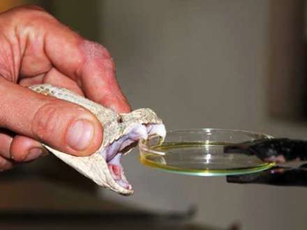

İlanlar elastik çənə quruluşuna sahibdir. Bununla da böyük canlıları uda bilirlər. İlanların çoxu zəhərsizdir. Zəhərsiz ilan növləri ovlarına dolanaraq onları boğur. İlanların zəhərli növləri isə zəhərdən ovlanmaq, yaxud özlərini qorumaq məqsədi ilə istifadə edirlər. İlanlar həşarat, qurbağa, quş, balıq, kərtənkələ, siçan, yumurta va s ilə qidalanır. İlanları öyrənən elm serpantologiya adlanır.
İlan dərisi pulcuqlarla örtülüdür, hamar va quru quruluşa malikdir.
İlanların qarın va bel pulcuqlarının quruluşu fərqlidir.
Dəri rəngləri çox müxtəlifdir. Bəziləri bir rəngə, bəziləri isa 3-4 rəngə sahibdir.
Rəngli ilanlar, əsasən, zəhərlidir. Ancaq zəhərli olmayan rəngli ilanlar da var.
Rəngli dəri təhlükəni bildirir və düşmənləri qorxutmaq üçün istifadə olunur,
amma bu o demak deyil ki, bir rəngli ilanların dəriləri qorunmaq üçün əlverişsizdir.
Bir rəngli ilanların rəngi daha çox bozumtul, qəhvəyi va qara rəngli olur ki,
bu rənglər da torpaqda, qumda, daşda gizlənmək üçün (kamuflyaj) ideal rənglərdir.
Dəri dəyişdirmə
Bir çox canlı kimi ilanlar da dəri dəyişdirir.
Köhnə dəri ağız tərəfdən cırılır, ilan daş, ağac kimi obyektlərə sürtünərək dərisini çıxardır.
Bu prosesin bir neçə funksiyası var.
İlk növbədə ilan köhnə dəridan azad olur, həm də parazitlərdən təmizlənir.
Zəhər başın arxasındakı zəhər vəzilərində toplanır və dişlər vasitəsilə ova, yaxud düşmənə yeridilir. Tüpürən kobra kimi bir neçə ilan təhlükə hiss etdikdə düşmənin gözünə zəhər tüpürür. Bəzi heyvanlarda ilan zəhərina qarşı təbii peyvənd vardır va zəhər onlara təsir etmir
